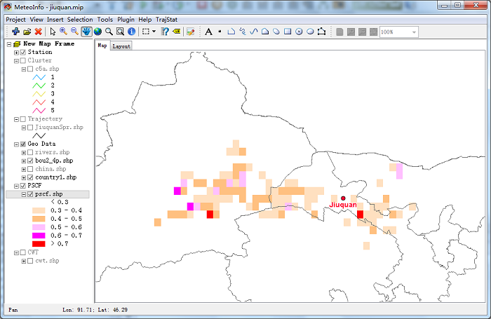
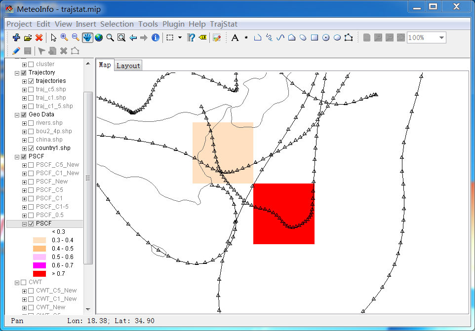

PSCF Analysis¶
The PSCF values for the grid cells in the study domain are calculated by counting the trajectory segment endpoints that terminate within each cell (Ashbaugh et al., 1985). The number of endpoints that fall in the ijth cell is designated nij. The number of endpoints for the same cell having arrival times at the sampling site corresponding to PM concentrations higher than an arbitrarily set criterion is defined to be mij. The PSCF value for the ijth cell is then defined as

The PSCF value can be interpreted as the conditional probability thatthe concentrations of a given analyte greater than the criterion level are related to the passage of air parcels through the ijth cell during transport to the receptor site. That is, cells with high PSCF values are associated with the arrival of air parcels at the receptor site that have concentrations of the analyte higher than the criterion value. These cells are indicative of areas of ‘high potential’ contributions for the constituent.
Click ‘PSCF Analysis’ menu item to open the below dialog.

Select trajectory layers, PSCF layer, data field and set pollution criterion and null data. Then press ‘Get Nij’, ‘Get Mij’, ‘Cal PSCF’ buttons one by one. To reduce the effect of small values of nij, the PSCF values were multiplied by an arbitrary weight function Wij to better reflect the uncertainty in the values for these cells (Polissar et al., 1999). The weighting function reduced the PSCF values when the total number of the endpoints in a particular cell was less than about three times the average value of the end points per each cell. In this case, Wij was defined as below.

After press ‘Weight PSCF’ button, the PSCF layer looks like below.
The PSCF analysis point out that west desert areas are the sources of PM10 in Jiuquan ambient air.
The weighting method by endpoint number can not reduce the PSCF/CWT value of the grid cell which only has one or few trajectories with high observation value but relative big endpoint number due to the slow air mass speed.
Trajectory number weighting function can be used to reduce the PSCF/CWT value at the cells with few trajectories. A ‘N_Traj’ field was added in the created PSCF/CWT layer to record the trajectory number in each grid cell, which can be obtained with ‘Nij’ at same time by clicking ‘Get Nij’ button in PSCF/CWT analysis dialog forms.